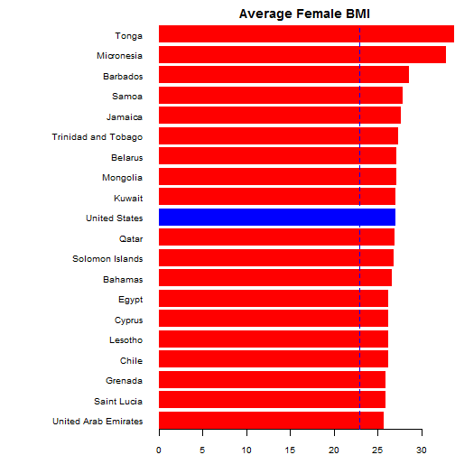

- Compute Body Mass Index using user-defined mass and height
- Compare computed BMI with country average for selected country and sex
- Present a graphical representation across all countries in sample
Alexey Ivashchenko
Country averages are computed by London School of Hygiene & Tropical Medicine and published here.
Actual data are obtained from Wiki
Here's a piece of code showing how it was done:
library(XML)
url <- "http://en.wikipedia.org/wiki/Body_mass_index"
table <- readHTMLTable(url)[[7]]
table <- table[, !grepl("Relative|Ratio|Average", names(table))]
table <- table[1:177, ]
names(table) <- c("Country", "Male", "Female")
table$Country <- as.character(table$Country)
table$Male <- as.numeric(as.character(table$Male))
table$Female <- as.numeric(as.character(table$Female))
Here's an example of how a resulting chart looks for a 70kg heavy and 1.75m tall US woman 